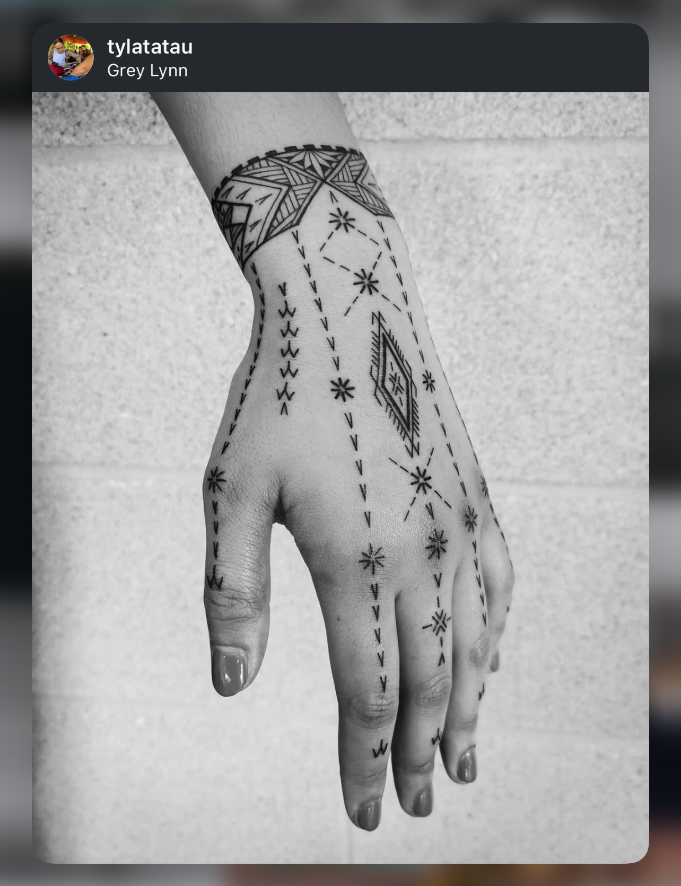
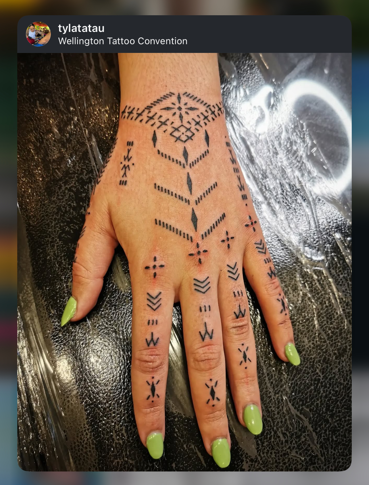
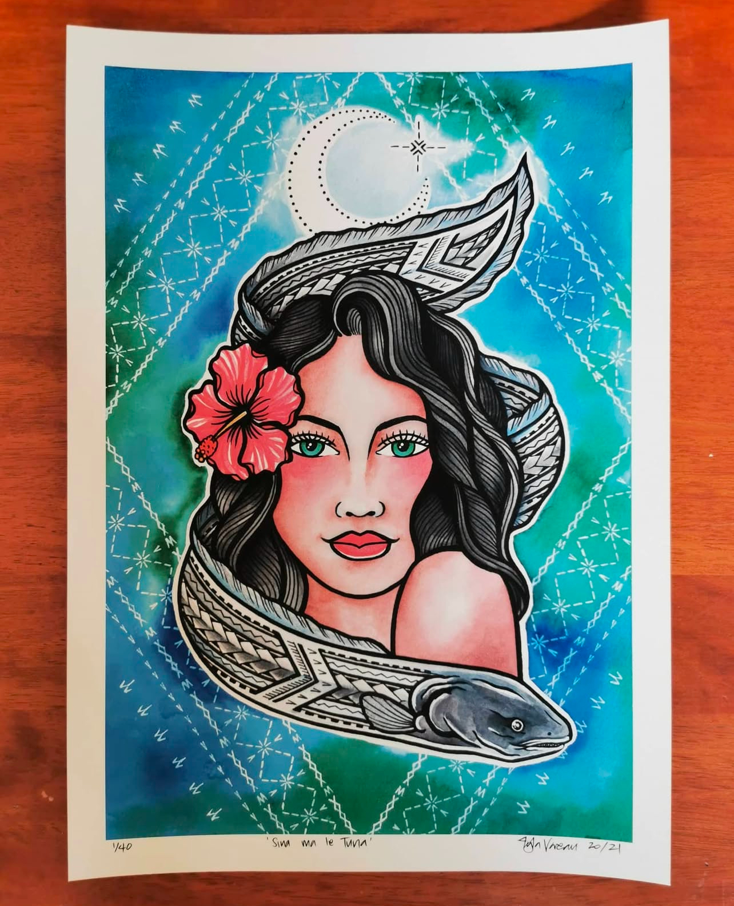
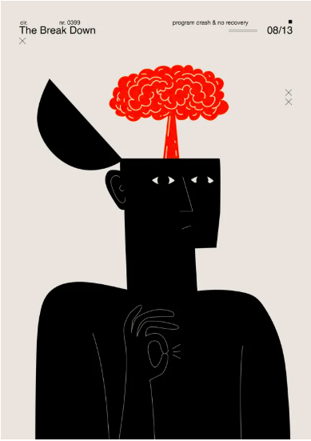
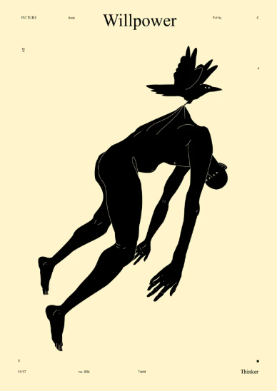
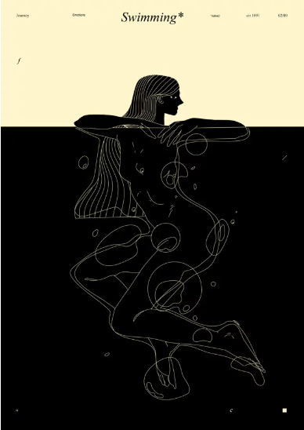
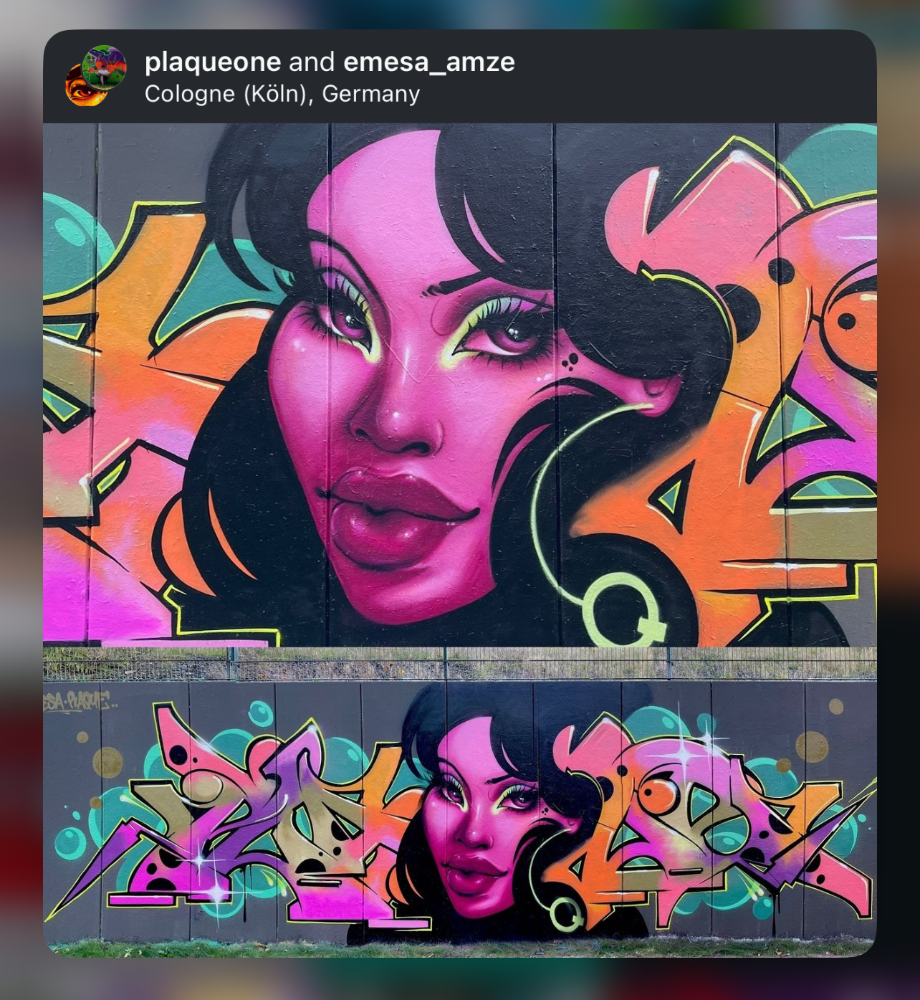
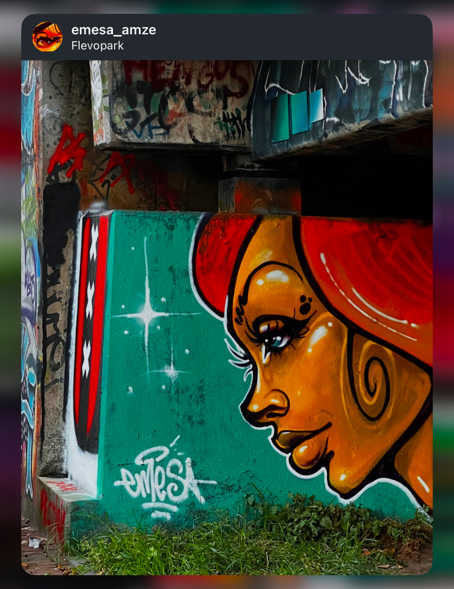
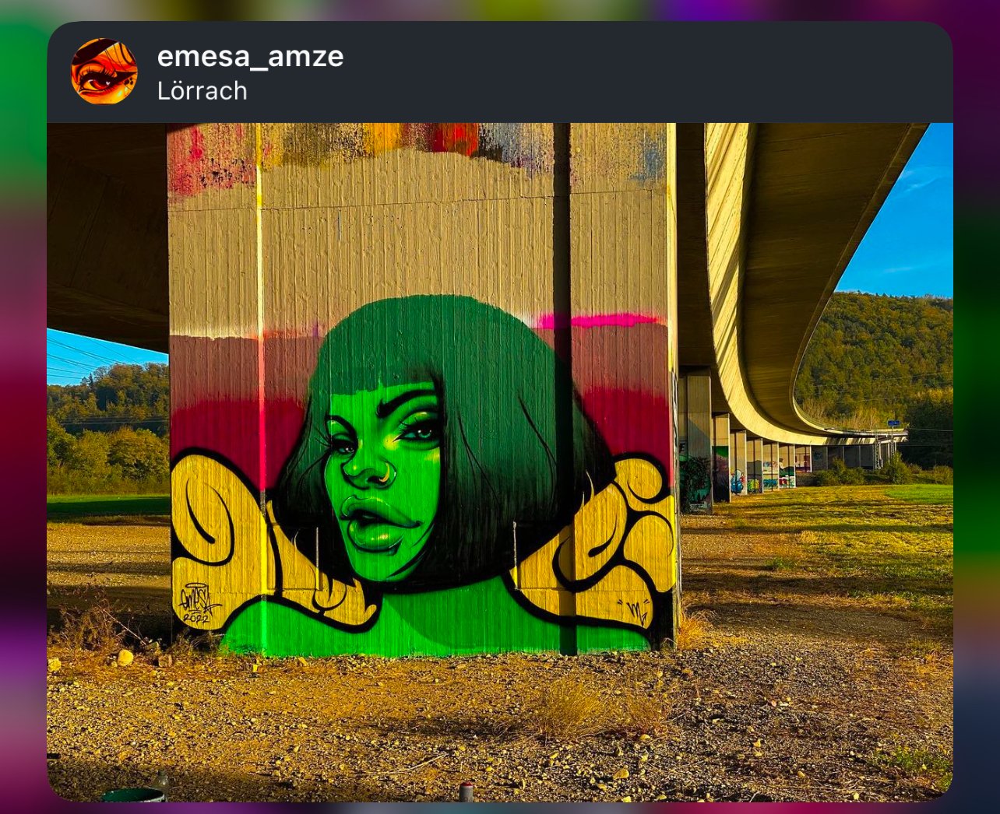

Her work is both articulate and personal. Her style of tattooing and her vast knowledge of the culture inspire me to keep including my cultural symbols and patterns in my pieces.



His overall aesthetic has a graphic, almost poster-like quality, with clean lines, bold shapes, and an emphasis on negative space. His style can be described as contemporary and timeless, offering a blend of simplicity and depth. What inspires me the most about his art gives me perspective on ways of articulating feelings through art.



Her work is characterized by vibrant colors, dynamic compositions, and a strong sense of femininity. I first discovered her art over a year ago, and it has become a source of inspiration for me.


